As an example,this chapter will introduce the events in fmod and configs for game.
以语言包为例，讲解从 Fmod 的事件 以及 游戏的音频配置。
1. Import Assets 导入资源
Create a subfolder in crew folder, drag your voice assets into this folder.
在 crew 下创建一个文件夹，然后将音频文件拖入此文件夹。
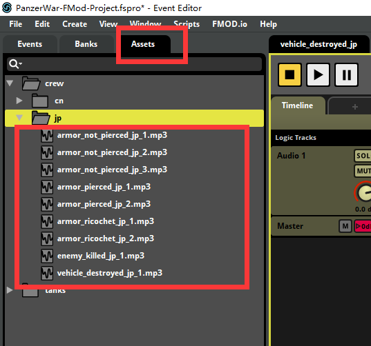
2. Create Events 创建事件
Create a subfolder in crew/ground. Select a set of existing voice event. Press Ctrl + D to duplicate it and drag it into newly created subfolder. Change the suffix from cn to whatever you want.
在 crew/ground 下创建一个文件夹，选中一份现有的事件，按 ctrl + d 复制并拖入刚刚创建的文件夹，更改事件的结尾名称 将 cn 改成你想要的标识。如图中 cn 改为 jp
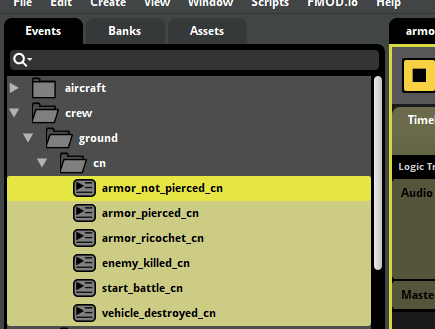
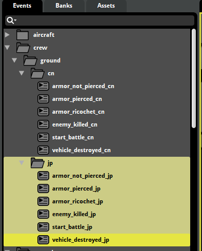
Select your event. Delete the original sounds from playlist and add your sounds into playlist one by one.
选中事件，将 Playlist 中的音频替换为你的音频。可以删除原有音频，然后将你的音频拖入其中即可。
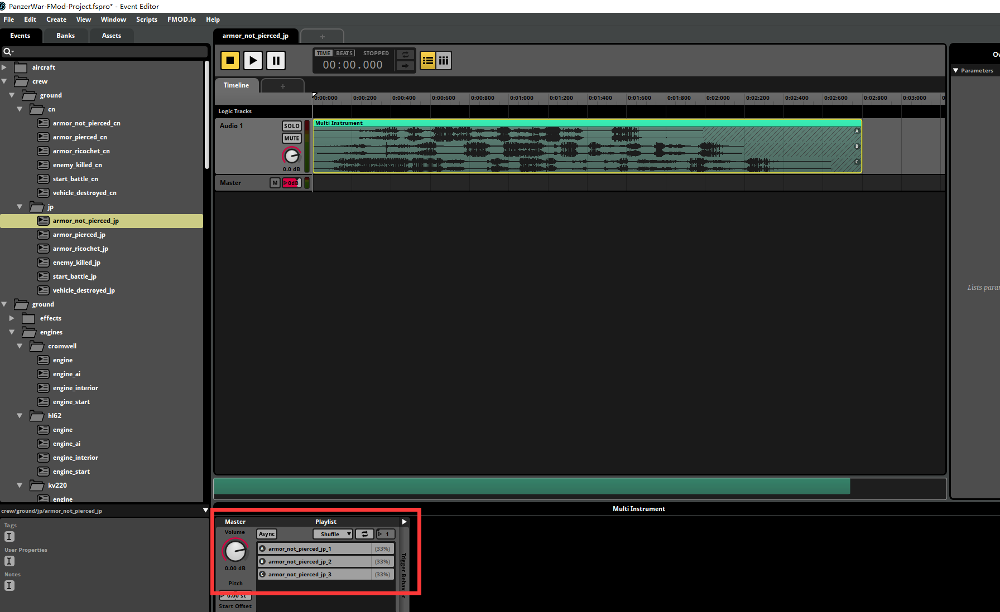
3. Check Mixer 检查 Mixer
Press Ctrl + 2 into Mixer window. Be sure the newly created events are under dialogs group.
按 Ctrl + 2 进入 Mixer 窗口，查看新创建的事件是否在 dialogs 组中
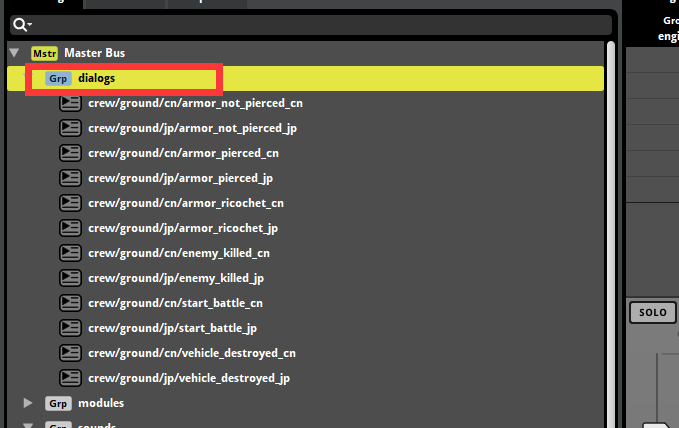
4. Create Sound Bank 创建 SoundBank
在 Banks 中创建一个新的 Bank，
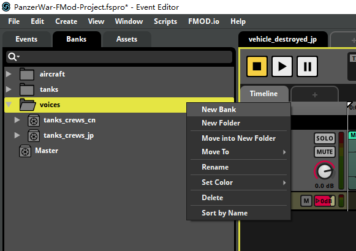
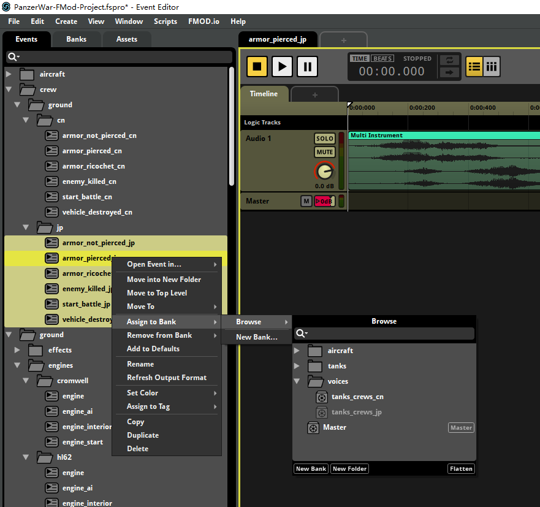
Then build all platforms. It will generate bank file at PanzerWar-Mods\PanzerWar-FMod-UGC-Project\Build.
然后，打包所有平台的 banks 文件。然后 bank 文件会在 PanzerWar-Mods\PanzerWar-FMod-UGC-Project\Build 创建。
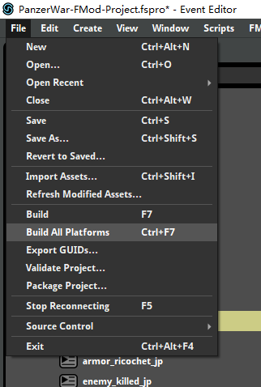
Then the work in Fmod Studio is finished. Let's go back to Unity project.
然后，Fmod 侧的工作就结束了，让我们回到 Unity 工程。
5. Create Config 创建配置
Use the following tool to create config faster.
使用以下工具快速创建配置信息
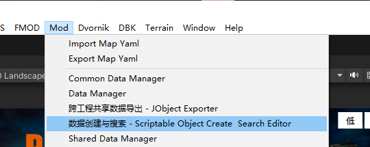
Create Crew Voice Config 创建成员语言配置
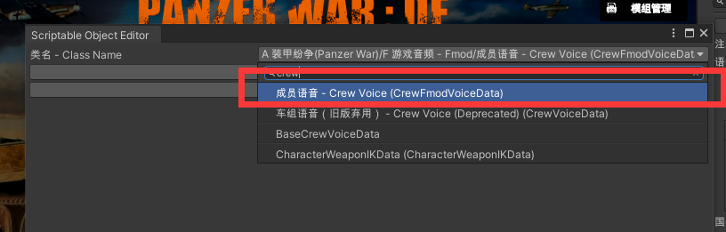
Select the events that you created in fmod in previous step.
将创建的事件名称填入对应类型
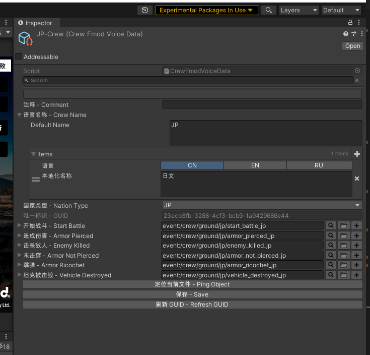
Create Bank 创建 Bank
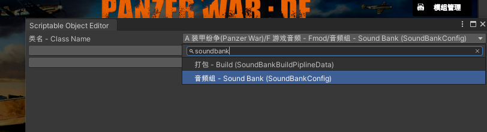
Select the bank you created and Refresh bank. And you need refresh bank if you changed the event and added the event. Otherwise, the game will not load bank correctly.
选择你创建的 Bank 并且刷新 Bank。并且，每次新增或者修改事件 ，则需要点击刷新 Bank，否则游戏将无法正确加载 Bank 播放音效。
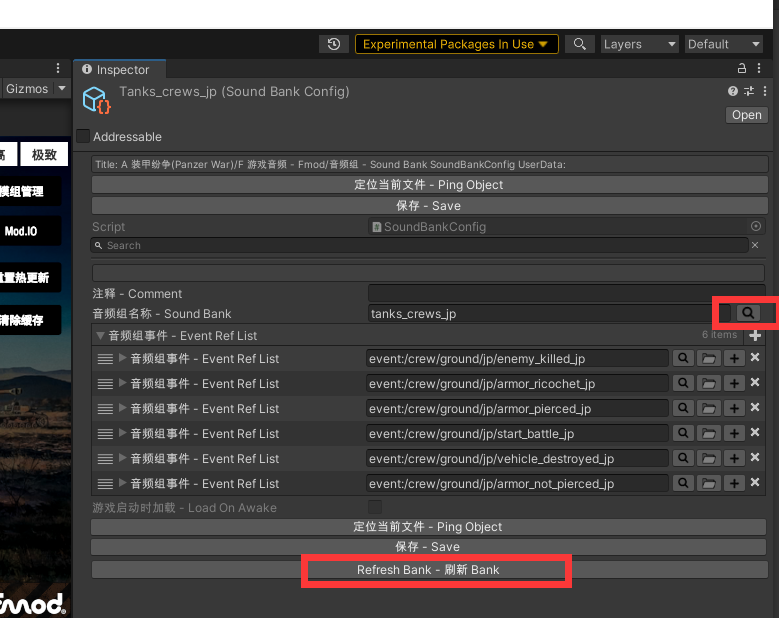
Create Bank BuildPipline 创建 Bank 打包配置
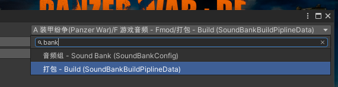
Select the bank file generated by FMod Studio in step.5
选择在步骤.5 由 FMod Studio 生成的 bank 文件
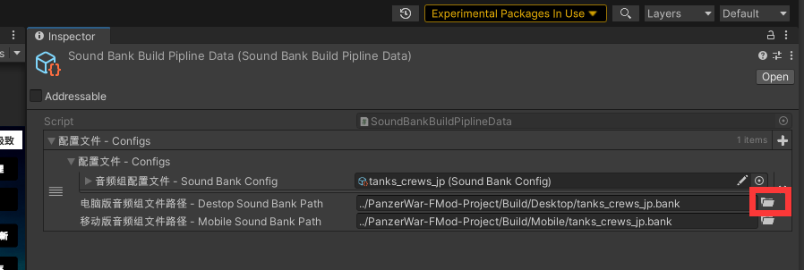
6. Build Config 打包配置
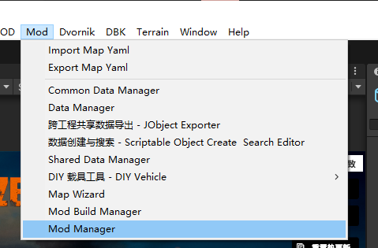
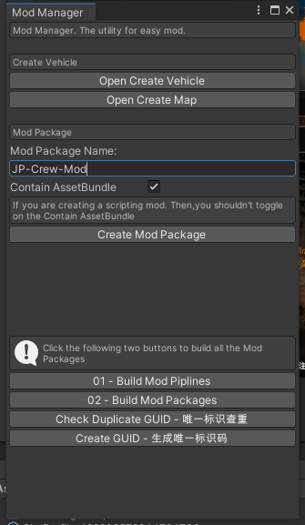
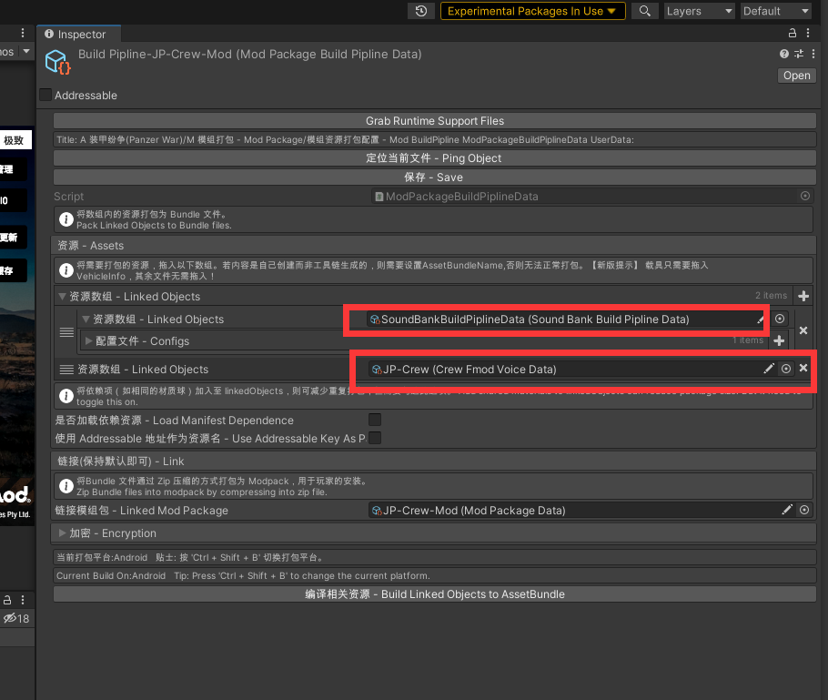
Then, you can build like other mods.
然后，就能和其他 Mod 一样进行打包即可。